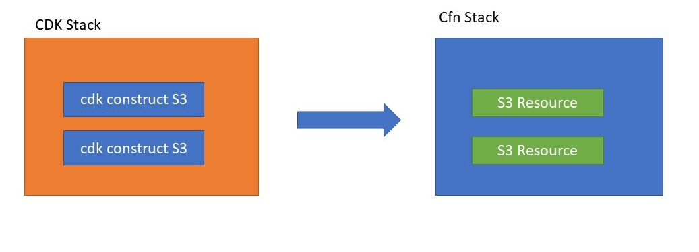

SCC
Brasil
os cloud gurus
Software Cloud Consulting
Your software development, cloud, consulting & shoring company
CDK - an overview about stacks and constructs
By Wolfgang Unger
If you are working with CDK, especially starting to work with the CDK, you may have had some
doubts on how to
organize your IaC within CDK
There are Stacks in the CDK, there are also Constructs, which you will create and then there are
there is the Construct Library,
which got 3 different kinds of Constructs L1, L2 and L3.
This short Tutorial should give you an overview about how to deal with this.
The first important class you have to know is the Stack.
from aws_cdk import Stack
class MyFirstStack(Stack):
def __init__(
self,
scope: Construct,
id: str,
....
There is also a class Construct which you should know
from constructs import Construct
class MyFirstConstruct(Construct):
def __init__(
self,
scope: Construct,
id: str,
....
But let's first skip this kind of construct and continue with our just created Stack.
Stacks
This Stack class represents a CloudFormation Stack. This will be synthized to a JSon File in cdk.out to be published as CloudFormation Stack,
which you can find in the CloudFormation Console in 'Active Stacks'
Any resoure you add in this stack class you will find in the CloudFormation Stack in the Tab 'Resources'
So now we can add AWS Resources inside our Stack class: from aws_cdk import Stack
class MyFirstStack(Stack):
def __init__(
self,
scope: Construct,
id: str,
config,
**kwargs,
) -> None:
s3Bucket1 = s3.Bucket(self, "MyFirstBucket", versioned=True)
s3Bucket2 = s3.Bucket(self, "MySecondBucket", versioned=True)
In a diagram this would look like this, the CDK code will be used to generate the Cfn Template with 2 S3 resources:

How should you organize / structure these Stacks?
You should structure them the same way would do when writing Cfn Stacks directly in Yaml or Json.
See the documentation about
AWS Cloud Formation best-practices
This means for example to organize your stacks by lifecycle and ownership. or by functional layers.
You should not create a huge CloudFormation Template createing a VPC, also creating a ECS Cluster, a ECS Service, the Loadbalancers for it, the RDS behind it and maybe also a API Gateway to expose the Rest methods.
This would be the same anti pattern as writing 'god-classes' for example in Java.
You must separate and strucucture your infrastructure in layers to be able to update the stacks in smaller units and therefore also allow for example the microservice developer only upate the Service stack and not the whole infrastructure stack including everything.
This could mean:
You first create the roles and other IAM resources in one or multiple IAM stacks.
Then you create the VPC and other networking resources in its own stacks.
On the next layer you could for example create storage resources like S3.
Next RDS databases.
Next for example common security groups.
Next compute resources like ECS and Fargate or EC2 instances.
Next API Gateway or related services.
Finally monitoring and alerting.
So for only on the first principle, please read and apply all of them. These principles are valid if you write Cfn Code directly with Yaml or Json but also for your CDK code inside the stack classes
AWS Construct Library
Now we can have a closer look on constructs. Please read also the AWS documentation : Constructs AWS CDK
A construct represents a "cloud component" and encapsulates everything AWS CloudFormation needs to create the component. You should look a look into the API documentation for all available CDK Constructs:
AWS CDK Reference API
It is important to knwo there are 3 kind of Constrcuts. L1, L2 and L3 ( L is short for Layer)
L1 have a PreFix Cfn for example batch.CfnComputeEnvironment
These L1 are very close to the CloudFormation Definition and its parameters for a AWS Resource.
This normally requires to pass more parameters to create a resource with a L1 construct.
"The next level of constructs, L2, also represent AWS resources, but with a higher-level, intent-based API.
They provide similar functionality, but provide the defaults, boilerplate, and glue logic you'd be writing yourself with a CFN Resource construct"
This means with this L2 constructs it is often easier and faster to create resoures, you can create resources with less obrigatory parameters,
the optional parameters are preset with a default value.
You will often create AWS resources with this L2 constructs, it is the best approach in CDK.
"Finally, the AWS Construct Library includes L3 constructs, which we call patterns. These constructs are designed to help you complete common tasks
in AWS, often involving multiple kinds of resources. For example, the aws-ecs-patterns. "
Besides these ready to use CDK constructs you can create your own construct classes. You have seen a example for this at the beginning of this tutorial.
Constructs
Why should you actually use the construct class? You can use the AWS L1,L2,L3 constructs in your Stacks.
Well for a simple S3 Bucket there is no need to write an additional Construct class to create it.
Just code in your stack as in the example above.
But for more complicated resources and resource compositions it might be really useful. For example a Batch Compute CfnComputeEnvironment.
For this resource you might need - if specifiying the details, not unly using the simple default constructor - a bunch of resources :
A launch configuration (aws_ec2.CfnLaunchTemplate.LaunchTemplateDataProperty) for the EC2 Instances uses as batch machines,
where you define CfnLaunchTemplate.InstanceRequirementsProperty like vCPU count, Memory, Block Device Mappings etc
You define your own Security Group for the Batch CfnComputeEnvironment
You need a aws_batch.CfnJobQueue and finally the aws_batch.CfnComputeEnvironment
This whole composition might be 200 lines of code.
Of course you could code this directly in your Stack class, but what if you need 2 different Batch Environments which differ in little details. (And of course you shouldn't blow up your stack classes which too many lines of code)
So better create a BatchEnvironment Construct where your define all these (here L1) constructs and create a nice Constructor with the parameters you want to pass to create the resources.
Now inside your Stack class you will only have a few lines of code.
from aws_cdk import Stack
class MyFirstStack(Stack):
def __init__(
self,
scope: Construct,
id: str,
config,
**kwargs,
) -> None:
myBatchEnv1 = MyBatchConstructGPU(self, "MyBatchConstruct", vcpus=8, gpus=1, gbs=160, image_type="ECS_AL2_NVIDIA")
myBatchEnv2 = MyBatchConstruct(self, "MyBatchConstruct", vcpus=8, gpus=0, gbs=500, image_type="ECS_AL2")
And there is one more advantage :
You can better re-use your Construct for future projects, even creating your own pip module to import in projects with the requirements.txt . See my blog on
How to create your own pip modules for your generic, reusable cdk consrtucts
I hope you won a good overview about how to organize your code within the CDK.
Autor

Wolfgang Unger
AWS Architect & Developer
5 x AWS Certified
1 x Azure Certified
A Cloud Guru Instructor
Certified Oracle JEE Architect
Certified Scrum Master
Certified Java Programmer
Passionate surfer & guitar player